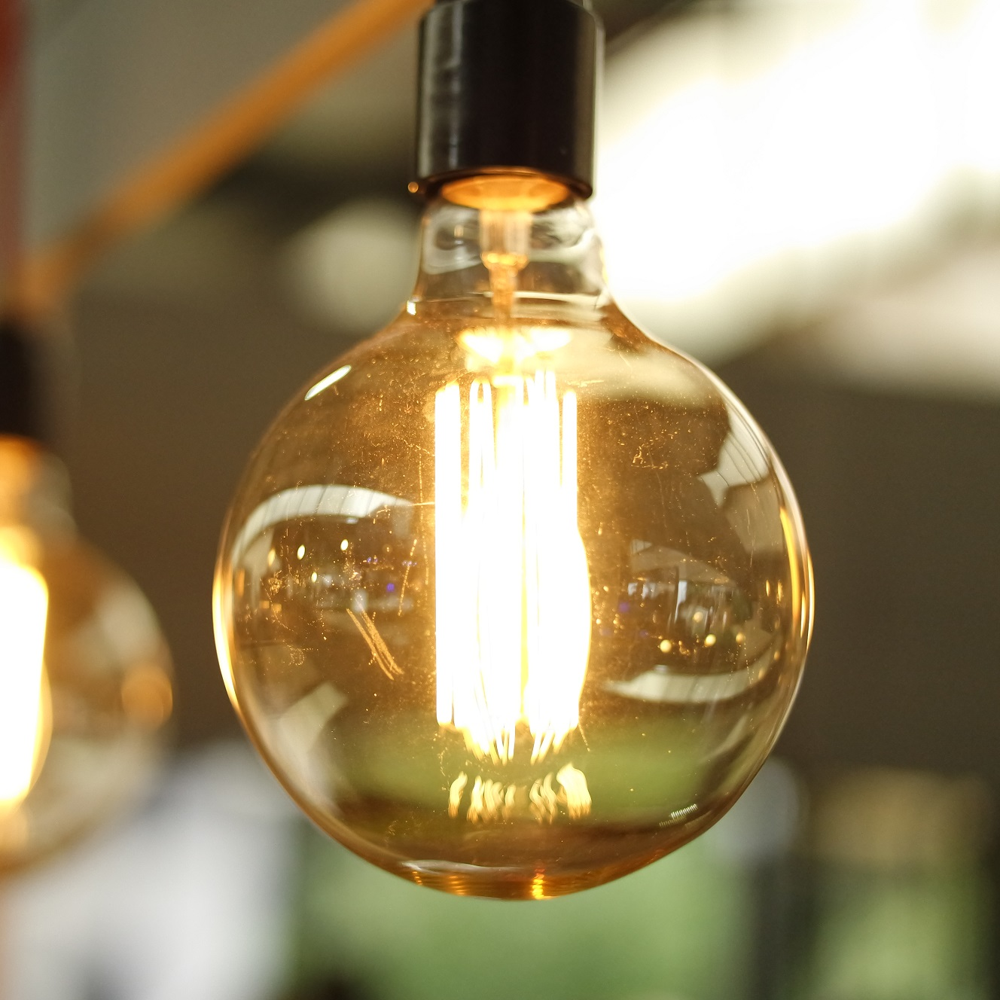

Redefining sustainability and innovation at UBC
Rethinking Energy
Introducing an ambitious multidisciplinary project sponsored by AMS Sustainability
Redefining sustainability and innovation at UBC
Introducing an ambitious multidisciplinary project sponsored by AMS Sustainability
Energy Storage: Sustainability in Action
The University of British Columbia is a global leader in campus sustainability. As part of UBC's Climate Action Plan for realizing a low carbon future, the university aims to become a net, positive energy producer by 2050 through aggressive energy conservation and the deployment of renewable technologies.
Renewable energy sources like wind and solar provide power output that depends largely on environmental conditions which are, by nature, inconsistent. Reliable energy storage systems are essential for the successful large-scale deployment of renewables. In this exploratory project, we propose to design and build a clean, sustainable microgrid system on campus using rechargeable redox flow batteries.

Funding ingeniuty in the pursuit of sustainability
AMS Sustainability, the sustainability office of the Alma Mater Society of UBC, provides connections and resources to students wishing to complete their own sustainability related projects, through the Sustainability Projects Fund. They create and coordinate in-house Sustainability Initiatives to build upon the environmental and social responsibility of the students at UBC Vancouver.
Chemical and Biological Engineering
The Department of Chemical and Biological Engineering at UBC has an established worldwide reputation for its accredited undergraduate programs, innovative research and the quality of its graduates and faculty. The Department will be hosting the project deliverables and has kindly provided lab space, resources and logistics support.


We aim to engage UBC students in a multidisciplinary setting that will provide hands-on experience with renewable energy technologies and promote student involvement in campus sustainability.
This project is an initiative of the UBC Chem-E-Car Engineering Design Team with support from the UBC Department of Chemical and Biological Engineering. For more information, please contact us or visit our website.
Email: info@ubcchemecar.com
Website: www.ubcchemecar.com
AMS Sustainability: amssustainability.ca